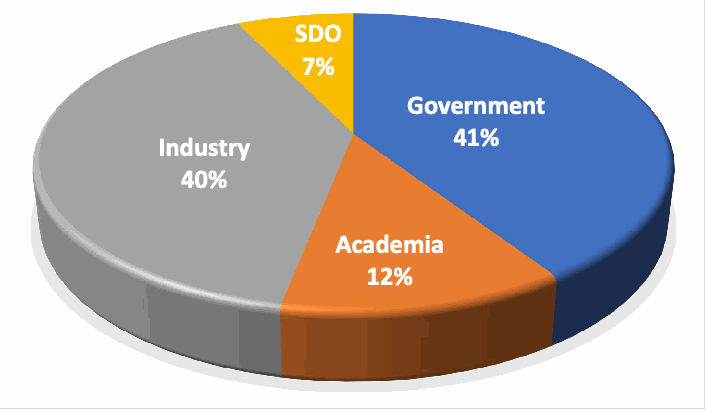

NIST IR 8532 日本語訳
英語タイトル : Workshop on Enhancing Security of Devices and Components Across the Supply Chain日本語タイトル : サプライチェーン全体にわたるデバイスおよびコンポーネントのセキュリティ強化に関するワークショップ
公開日 : 2025-02-18
原文URL : https://csrc.nist.gov/pubs/ir/8532/final
翻訳編集 : 自動生成（有志による非公式の日本語訳）, 原文取得日 : 2026-10-31, 訳文 : 193 / 194 ブロック
[要約] NIST IR 8532 は、NIST が 2024 年 2 月 27 日に開催した、半導体のライフサイクル全体にわたる既存および新たなサイバーセキュリティの脅威と緩和手法を議論する終日の対面ワークショップの内容をまとめた報告書です。このワークショップでは、産業界、学術界、政府から得たフィードバックを、NIST によるサイバーセキュリティおよびサプライチェーンに関する標準、ガイダンス、推奨プラクティスの策定に役立てました。議論は半導体開発に焦点を当て、半導体コンポーネントの試験、証明、認証、検証、妥当性確認を容易にするため、参照データセットを利用するサイバーセキュリティの測定とメトリクスを取り上げました。報告書は、ハードウェア開発ライフサイクル、計測学、ハードウェア／シリコンの試験、脆弱性管理、標準の各セッションでの講演者の見解と主な要点を記述しています。
NIST Internal Report
NIST内部報告書
NIST IR 8532
NIST IR 8532
Workshop on Enhancing Security of Devices and Components Across the Supply Chain
サプライチェーン全体にわたるデバイスおよびコンポーネントのセキュリティ強化に関するワークショップ
Sanjay (Jay) Rekhi D. Richard Kuhn Kim Schaffer Murugiah Souppaya A.J. Stein Noah Waller Nelson Hastings Michael Ogata William C. Barker
Sanjay (Jay) Rekhi D. Richard Kuhn Kim Schaffer Murugiah Souppaya A.J. Stein Noah Waller Nelson Hastings Michael Ogata William C. Barker
This publication is available free of charge from: https://doi.org/10.6028/NIST.IR.8532
本刊行物は次のURLから無料で入手できます: https://doi.org/10.6028/NIST.IR.8532
NIST Internal Report
NIST内部報告書
NIST IR 8532
NIST IR 8532
Workshop on Enhancing Security of Devices and Components Across the Supply Chain
サプライチェーン全体にわたるデバイスおよびコンポーネントのセキュリティ強化に関するワークショップ
Sanjay (Jay) Rekhi
Sanjay (Jay) Rekhi
D. Richard Kuhn
D. Richard Kuhn
Kim Schaffer*
Kim Schaffer*
Murugiah Souppaya A.J. Stein*
Murugiah Souppaya A.J. Stein*
Noah Waller
Noah Waller
Computer Security Division Information Technology Laboratory
Computer Security Division Information Technology Laboratory
Nelson Hastings
Nelson Hastings
Michael Ogata
Michael Ogata
Applied Cybersecurity Division Information Technology Laboratory
Applied Cybersecurity Division Information Technology Laboratory
William C. Barker
William C. Barker
Dakota Consulting
Dakota Consulting
*Former NIST employee; all work for this publication was done while at NIST.
*元NIST職員。本刊行物に係るすべての作業はNIST在職中に行われました。
This publication is available free of charge from: https://doi.org/10.6028/NIST.IR.8532
本刊行物は次のURLから無料で入手できます: https://doi.org/10.6028/NIST.IR.8532
February 2025
2025年2月
［米国商務省の紋章。公的な標章のため、この非公式サイトには掲載していません。原本 PDF を参照してください。］
U.S. Department of Commerce Jeremy Pelter, Acting Secretary of Commerce
U.S. Department of Commerce Jeremy Pelter, Acting Secretary of Commerce
National Institute of Standards and Technology
National Institute of Standards and Technology
Craig Burkhardt, Acting Under Secretary of Commerce for Standards and Technology and Acting NIST Director
Craig Burkhardt, Acting Under Secretary of Commerce for Standards and Technology and Acting NIST Director
Certain equipment, instruments, software, or materials, commercial or non-commercial, are identified in this paper in order to specify the experimental procedure adequately. Such identification does not imply recommendation or endorsement of any product or service by NIST, nor does it imply that the materials or equipment identified are necessarily the best available for the purpose.
本論文では、実験手順を十分に特定するため、商用・非商用を問わず、特定の機器、計器、ソフトウェア、または資材を挙げています。こうした記載は、NISTがそれらの製品やサービスを推奨または支持することを意味するものではなく、挙げた資材や機器がその目的にとって必ずしも最良であることを意味するものでもありません。
There may be references in this publication to other publications currently under development by NIST in accordance with its assigned statutory responsibilities. The information in this publication, including concepts and methodologies, may be used by federal agencies even before the completion of such companion publications. Thus, until each publication is completed, current requirements, guidelines, and procedures, where they exist, remain operative. For planning and transition purposes, federal agencies may wish to closely follow the development of these new publications by NIST.
本刊行物では、NISTが割り当てられた法令上の責務に従って策定中の他の刊行物に言及している場合があります。概念や方法論を含む本刊行物の情報は、そのような関連刊行物の完成前であっても、連邦機関が利用してもよいです。したがって、各刊行物が完成するまでは、現行の要件、ガイドライン、手順が存在する場合、それらが引き続き有効です。計画および移行のため、連邦機関はNISTによるこれらの新しい刊行物の策定状況を注意深く追うことを検討してもよいです。
Organizations are encouraged to review all draft publications during public comment periods and provide feedback to NIST. Many NIST cybersecurity publications, other than the ones noted above, are available at https://csrc.nist.gov/publications.
組織は、パブリックコメント期間中にすべてのドラフト刊行物を確認し、NISTにフィードバックを提供することが奨励されています。上記以外のNISTのサイバーセキュリティ関連刊行物の多くは、https://csrc.nist.gov/publicationsで入手できます。
NIST Technical Series Policies Copyright, Use, and Licensing Statements NIST Technical Series Publication Identifier Syntax
NIST Technical Series Policies Copyright, Use, and Licensing Statements NIST Technical Series Publication Identifier Syntax
Publication History Approved by the NIST Editorial Review Board on 2024-12-20
刊行の経緯：2024-12-20にNIST Editorial Review Boardが承認
How to Cite this NIST Technical Series Publication Rekhi S, Kuhn DR, Schaffer K, Souppaya M, Stein AJ, Waller N, Hastings N, Ogata M, Barker WC (2025) Workshop on Enhancing Security of Devices and Components Across the Supply Chain. (National Institute of Standards and Technology, Gaithersburg, MD), NIST Interagency or Internal Report (IR) NIST IR 8532. https://doi.org/10.6028/NIST.IR.8532
本NIST Technical Series刊行物の引用方法：Rekhi S, Kuhn DR, Schaffer K, Souppaya M, Stein AJ, Waller N, Hastings N, Ogata M, Barker WC (2025) Workshop on Enhancing Security of Devices and Components Across the Supply Chain. (National Institute of Standards and Technology, Gaithersburg, MD), NIST Interagency or Internal Report (IR) NIST IR 8532. https://doi.org/10.6028/NIST.IR.8532
Author ORCID iDs William C. Barker: 0000-0002-4113-8861 Nelson Hastings: 0000-0003-2444-6413 D. Richard Kuhn: 0000-0003-0050-1596 Michael Ogata: 0000-0002-8457-2430 Sanjay (Jay) Rekhi: 0009-0008-8711-4030 Kim Schaffer: 0000-0003-3073-2395 Murugiah Souppaya: 0000-0002-8055-8527 A.J. Stein: 0000-0003-1092-2642 Noah Waller: 0000-0002-6979-9725
著者のORCID iDs William C. Barker: 0000-0002-4113-8861 Nelson Hastings: 0000-0003-2444-6413 D. Richard Kuhn: 0000-0003-0050-1596 Michael Ogata: 0000-0002-8457-2430 Sanjay (Jay) Rekhi: 0009-0008-8711-4030 Kim Schaffer: 0000-0003-3073-2395 Murugiah Souppaya: 0000-0002-8055-8527 A.J. Stein: 0000-0003-1092-2642 Noah Waller: 0000-0002-6979-9725
Contact Information hwsec@nist.gov
連絡先hwsec@nist.gov
National Institute of Standards and Technology Attn: Computer Security Division, Information Technology Laboratory 100 Bureau Drive (Mail Stop 8930) Gaithersburg, MD 20899-8930
National Institute of Standards and Technology Attn: Computer Security Division, Information Technology Laboratory 100 Bureau Drive (Mail Stop 8930) Gaithersburg, MD 20899-8930
Additional Information Additional information about this publication is available at https://csrc.nist.gov/pubs/ir/8532/final, including related content, potential updates, and document history.
追加情報：本刊行物に関する追加情報（関連コンテンツ、更新の可能性、文書の履歴を含む）は、https://csrc.nist.gov/pubs/ir/8532/finalで入手できます。
All comments are subject to release under the Freedom of Information Act (FOIA).
すべてのコメントは、情報自由法（FOIA）に基づいて公開される場合があります。
Abstract
要旨
The National Institute of Standards and Technology (NIST) hosted an in-person, all-day workshop on February 27, 2024, to discuss existing and emerging cybersecurity threats and mitigation techniques for semiconductors throughout their life cycle. The workshop obtained valuable feedback from industry, academia, and government to inform NIST’s development of cybersecurity and supply chain standards, guidance, and recommended practices. The discussion focused on semiconductor development and highlighted cybersecurity measurements and metrics that utilize reference data sets to facilitate the testing, attestation, certification, verification, and validation of semiconductor components. It also emphasized the use of automated cybersecurity tools and techniques to secure manufacturing environments throughout the development life cycle. This report summarizes the content that was presented and discussed at the workshop.
米国国立標準技術研究所（NIST）は、2024年2月27日に、半導体のライフサイクル全体にわたる既存および新たなサイバーセキュリティの脅威と緩和手法について議論するため、終日の対面ワークショップを開催しました。このワークショップでは、産業界、学術界、政府から貴重なフィードバックを得て、NISTによるサイバーセキュリティおよびサプライチェーンに関する標準、ガイダンス、推奨プラクティスの策定に役立てました。議論は半導体開発に焦点を当て、半導体コンポーネントの試験、証明、認証、検証、妥当性確認を容易にするため、参照データセットを利用するサイバーセキュリティの測定とメトリクスを取り上げました。また、開発ライフサイクル全体にわたって製造環境を保護するため、自動化されたサイバーセキュリティのツールと手法を用いることも強調されました。本報告書は、ワークショップで発表・議論された内容をまとめたものです。
Keywords
キーワード
cybersecurity; hardware security; measurement; semiconductors; supply chain; vulnerabilities.
cybersecurity; hardware security; measurement; semiconductors; supply chain; vulnerabilities.
Reports on Computer Systems Technology
コンピュータシステム技術に関する報告書
The Information Technology Laboratory (ITL) at the National Institute of Standards and Technology (NIST) promotes the US economy and public welfare by providing technical leadership for the Nation’s measurement and standards infrastructure. ITL develops tests, test methods, reference data, proof of concept implementations, and technical analyses to advance the development and productive use of information technology. ITL’s responsibilities include the development of management, administrative, technical, and physical standards and guidelines for the cost-effective security and privacy of other than national security-related information in federal information systems.
米国国立標準技術研究所（NIST）の情報技術研究所（ITL）は、国の計測・標準インフラに対する技術的リーダーシップを提供することで、米国の経済と公共の福祉を促進しています。ITLは、情報技術の開発と生産的な利用を推進するため、試験、試験方法、参照データ、概念実証の実装、技術分析を開発しています。ITLの責務には、連邦情報システムにおける、国家安全保障関連以外の情報の費用対効果の高いセキュリティとプライバシーのための管理上・事務上・技術上・物理上の標準とガイドラインの策定が含まれます。
Table of Contents
目次
List of Figures
図の一覧
1. Introduction
1.はじめに
Semiconductor-based hardware is the foundation of modern-day electronics — from smartphones, computers, and telecommunications to transportation and critical infrastructure. The semiconductor hardware supply chain is a complex network of companies that collectively provide intellectual property, designs, and raw materials and manufacture, test, package, and distribute products. Coordination among the components of a supply chain is required at different stages, including inception, deployment to end users, maintenance during use, and disposal or end of life. Securing semiconductor-based hardware and their supply chains help protect sensitive information, maintain the integrity of systems, and ensure overall stability across the infrastructure and connected world.
半導体ベースのハードウェアは、スマートフォン、コンピュータ、電気通信から、輸送や重要インフラに至るまで、現代のエレクトロニクスの基盤です。半導体ハードウェアのサプライチェーンは、知的財産、設計、原材料を提供し、製品の製造、試験、パッケージング、流通を担う企業が集まった複雑なネットワークです。サプライチェーンの構成要素間の連携は、開始、エンドユーザーへの展開、使用中の保守、廃棄または寿命末期といった、さまざまな段階で必要となります。半導体ベースのハードウェアとそれらのサプライチェーンを保護することは、機微な情報の保護、システムの完全性の維持、そしてインフラと接続された世界全体の安定性の確保に役立ちます。
Securing semiconductors involves the security of the component being built as well as the design, development, manufacturing, and distribution environments. Figure 1 illustrates the components of achieving robust semiconductor security.
半導体を保護するには、構築するコンポーネント自体のセキュリティに加え、設計、開発、製造、流通の各環境のセキュリティも必要です。図1は、堅牢な半導体セキュリティを実現するための構成要素を示しています。
![Diagram. Across the top, an arrow lists life-cycle stages: Design, Development, Manufacturing, Packaging, Integration, Provisioning, Maintenance, End of Life. Below, “Semiconductor Security” branches into “Security OF Semiconductors” and “Security FOR Semiconductors”. Security OF Semiconductors points to “Design & Development” (Vulnerabilities, Secure communication, Authentication, Secure firmware, Life cycle mgmt, …) and to “Supply Chain”; Security FOR Semiconductors points to “Supply Chain” and to “Manufacturing” (IT Security Risks, Weak Security Controls, IT Network Attacks, Data Security, …). The Supply Chain box has two columns: Counterfeiting, IP Protection, Malware, Trojans, …; and System Vulnerabilities, Material Supply, Device, Firmware alteration, Re-mark, ….](assets/ir-8532/p0007-figure-01.png)
図。上部の矢印には、ライフサイクルの段階としてDesign（設計）、Development（開発）、Manufacturing（製造）、Packaging（パッケージング）、Integration（統合）、Provisioning（プロビジョニング）、Maintenance（保守）、End of Life（運用終了）が並びます。その下では、「Semiconductor Security」（半導体セキュリティ）が「Security OF Semiconductors」（半導体そのもののセキュリティ）と「Security FOR Semiconductors」（半導体のためのセキュリティ）に分岐します。「Security OF Semiconductors」からは「Design & Development」（設計・開発：Vulnerabilities（脆弱性）、Secure communication（安全な通信）、Authentication（認証）、Secure firmware（安全なファームウェア）、Life cycle mgmt（ライフサイクル管理）、…）と「Supply Chain」（サプライチェーン）へ矢印が伸びます。「Security FOR Semiconductors」からは「Supply Chain」（サプライチェーン）と「Manufacturing」（製造：IT Security Risks（ITセキュリティリスク）、Weak Security Controls（弱いセキュリティ管理策）、IT Network Attacks（ITネットワーク攻撃）、Data Security（データセキュリティ）、…）へ矢印が伸びます。「Supply Chain」の枠には2列があり、左列にCounterfeiting（偽造）、IP Protection（知的財産の保護）、Malware（マルウェア）、Trojans（トロイの木馬）、…、右列にSystem Vulnerabilities（システムの脆弱性）、Material Supply（材料の供給）、Device（デバイス）、Firmware alteration（ファームウェアの改変）、Re-mark（再刻印）、…が並びます。
Fig. 1. Elements for securing microelectronics
図1.マイクロエレクトロニクスを保護するための要素
These activities range from physical protection mechanisms (e.g., tamper-resistant packaging) to strong encryption protocols to safeguard data. Secure boot processes ensure that only verified firmware runs, and maintaining supply chain integrity through verification and audits prevents counterfeit components. Life cycle management includes secure provisioning, updates, and end-of-life processes that are complemented by rigorous security testing and compliance with regulatory standards. Educating users on secure practices and continuously improving security measures further fortifies defenses against evolving threats and ensures that semiconductor devices operate securely throughout their life cycle.
これらの活動は、物理的な保護機構（例:耐タンパーパッケージング）から、データを保護する強力な暗号プロトコルにまで及びます。セキュアブートのプロセスにより、検証済みのファームウェアだけが実行されるようになり、検証と監査によってサプライチェーンの完全性を維持することで、偽造コンポーネントを防止します。ライフサイクル管理には、セキュアなプロビジョニング、更新、寿命末期のプロセスが含まれ、これらは厳格なセキュリティテストと規制標準への準拠によって補完されます。ユーザーにセキュアなプラクティスを教育し、セキュリティ対策を継続的に改善することで、進化する脅威への防御がさらに強化され、半導体デバイスがライフサイクル全体を通じてセキュアに動作することが確実になります。
The National Strategy on Microelectronics Research has emphasized the prioritization of hardware integrity and security. In response, NIST convened its inaugural workshop, “Enhancing Security of Devices and Components Across the Supply Chain”1 on February 27, 2024, at the National Cybersecurity Center of Excellence (NCCoE) facility. At this workshop, government, academia, and industry experts gathered to collaborate on research efforts, drive innovation, and establish standards, guidance, and practical implementations in a rapidly evolving landscape. The workshop was primarily an in-person event with a few remote speakers and participants. In total, there were 98 participants, with 79 participants almost evenly distributed from government and industry. The remaining 19 attendees were from academia and standards developing organizations (SDOs). Figure 2 shows the distribution of participants.
国家マイクロエレクトロニクス研究戦略（National Strategy on Microelectronics Research）は、ハードウェアの完全性とセキュリティを優先することを強調してきました。これを受けてNISTは、2024年2月27日に国立サイバーセキュリティ卓越センター（NCCoE）の施設で、初のワークショップ「Enhancing Security of Devices and Components Across the Supply Chain」1を開催しました。このワークショップでは、政府、学術界、産業界の専門家が集まり、急速に進化する状況の中で、研究の取り組みでの協力、イノベーションの推進、標準・ガイダンス・実践的な実装の確立を図りました。ワークショップは主に対面形式で開催され、一部の講演者と参加者はリモートで参加しました。参加者は合計98名で、そのうち79名は政府と産業界からほぼ同数でした。残りの19名は、学術界と標準策定組織（SDO）からの参加者でした。図2に参加者の内訳を示します。

ワークショップ参加者の内訳を示す立体の円グラフです。Government（政府）41%、Industry（産業界）40%、Academia（学術界）12%、SDO（標準化団体）7%。
Fig. 2. Distribution of workshop participants
図2.ワークショップ参加者の内訳
2. Workshop Sessions
2.ワークショップのセッション
2.1. Hardware Development Life Cycle
2.1.ハードウェア開発ライフサイクル
Semiconductor and integrated circuit (IC) development is complex, non-linear, and varies from one manufacturer to another. Development of hardware is complex with many business drivers, relying on expertise at best cost across a global supply chain. This panel discussion focused on open security concerns in the hardware development life cycle.
半導体および集積回路（IC）の開発は複雑かつ非線形であり、製造業者によって異なります。ハードウェアの開発は、多くの事業上の要因が関わる複雑なものであり、グローバルなサプライチェーン全体で、最良のコスト条件で専門知識を活用することに依存しています。このパネルディスカッションでは、ハードウェア開発ライフサイクルにおける未解決のセキュリティ上の懸念に焦点を当てました。
2.1.1. Speaker Viewpoints
2.1.1.講演者の見解
The panel opened with Jonathan Ring, Deputy Assistant National Cyber Director for Technology Security from the Office of the National Cyber Director (ONCD). Jonathan reflected that ONCD’s National Cybersecurity Strategy recognizes the importance of improving the cybersecurity of the Nation’s critical infrastructure, which includes restoring the production of critical goods to the United States (US) as well as improving cybersecurity in the semiconductor/IC supply chain.
パネルは、国家サイバー長官室（ONCD）の技術セキュリティ担当国家サイバー次長補のJonathan Ring氏の発言で始まりました。Jonathan氏は、ONCDの国家サイバーセキュリティ戦略が、国の重要インフラのサイバーセキュリティの向上の重要性を認識していると述べました。これには、重要な物資の生産を米国（US）に戻すことや、半導体／ICサプライチェーンにおけるサイバーセキュリティの向上が含まれます。
Jonathan highlighted past achievements of the Biden-Harris Administration that overlap with cybersecurity in the hardware development life cycle, including:
Jonathan氏は、ハードウェア開発ライフサイクルにおけるサイバーセキュリティと重なるバイデン・ハリス政権の過去の成果として、次の点を挙げました。
•Shifting the balance of security to those best suited to bear it, as represented in the Cybersecurity and Infrastructure Security Agency’s (CISA) Secure by Design initiative
•サイバーセキュリティ・インフラセキュリティ庁（CISA）のSecure by Designイニシアチブに表れているように、セキュリティの負担を、それを担うのに最も適した者へ移すこと
•The NIST CHIPS (Creating Helpful Incentives to Produce Semiconductors) R&D Metrology Program, which outlines gaps in the semiconductor ecosystem
•半導体エコシステムのギャップを示している、NIST CHIPS（Creating Helpful Incentives to Produce Semiconductors）R&D Metrology Program
•Ongoing work through the Subcommittee for Microelectronics Leadership
•Subcommittee for Microelectronics Leadershipを通じた継続的な取り組み
•Eliminating entire classes of software vulnerabilities in Back to the Building Blocks: A Path Toward Secure and Measurable Software
•Back to the Building Blocks: A Path Toward Secure and Measurable Softwareにおける、ソフトウェア脆弱性のクラス全体の排除
Furthermore, Jonathan stressed the importance and continued need for public-private partnerships, like the Semiconductor Research Corporation and the Semiconductor Industry Association. He also stressed the need for continued conversations concerning advanced metrology for supply chain trust and assurance, guidelines for security analytics and automation, vulnerability management across all product life cycles, and the use of machine learning in chip design and manufacturing.
さらにJonathan氏は、Semiconductor Research CorporationやSemiconductor Industry Associationのような官民パートナーシップの重要性と、その継続の必要性を強調しました。また、サプライチェーンの信頼と保証のための高度な計測学、セキュリティ分析と自動化のガイドライン、全製品ライフサイクルにわたる脆弱性管理、チップの設計・製造における機械学習の活用についての議論を、引き続き行う必要性も強調しました。
The second speaker for the panel was Adam Golodner, advisor to the Semiconductor Industry Association. Adam spoke about the importance of leveraging and adapting NIST resources, like the Cybersecurity Framework (CSF). Adam highlighted four key reasons why a similar framework for hardware security and supply chains would be useful to the semiconductor industry:
パネルの2人目の講演者は、Semiconductor Industry Associationの顧問であるAdam Golodner氏でした。Adam氏は、サイバーセキュリティフレームワーク（CSF）のようなNISTのリソースを活用し、適応させることの重要性について話しました。Adam氏は、ハードウェアセキュリティとサプライチェーンに関する同様のフレームワークが半導体業界にとって有用である理由として、次の4つの主な点を挙げました。
1.Frameworks like the CSF enable thoughtful, flexible, and configurable approaches to security and allow enterprises to adopt the processes and maturity levels that best move security forward for them.
1.CSFのようなフレームワークは、周到で柔軟かつ構成可能なセキュリティへのアプローチを可能にし、企業が自らのセキュリティを最も前進させるプロセスと成熟度レベルを採用できるようにします。
2.A hardware security and supply chain framework can benefit from the recognition and adoption that the CSF has already earned.
2.ハードウェアセキュリティとサプライチェーンのフレームワークは、CSFがすでに得ている認知と採用の恩恵を受けることができます。
3.The CSF and NIST have global reach and acceptance. Similarly, establishing an internationally recognized set of best practices will enhance security and innovation in a global hardware and supply chain environment.
3.CSFとNISTは、世界的な影響力と受容性を持っています。同様に、国際的に認められた一連のベストプラクティスを確立することで、グローバルなハードウェアおよびサプライチェーン環境におけるセキュリティとイノベーションが高まります。
4.NIST has the pedigree for getting security “right.”
4.NISTには、セキュリティを「正しく」実現してきた実績があります。
Furthermore, Adam reflected that while security is core to many company brands, quantifying its return on investment is a C-suite and Board of Directors issue.
さらにAdam氏は、セキュリティは多くの企業のブランドの中核である一方、その投資対効果の定量化は、経営幹部（C-suite）と取締役会の問題であると述べました。
The last panel member was Matthew Areno, Senior Principal Engineer for Intel Corporation. Matthew admitted that there is no industry standard to describe the phases of the supply chain for ICs. However, his expertise and history with the industry have enabled him to develop his own conceptual model that is divided into seven stages: concept, development, integration, manufacturing, testing, provisioning, and deployment. During his time at Intel, Matthew has worked to develop a threat model for Intel’s supply chain. Intel discovered that each of their teams approached the exercise of threat modeling in different ways, which made it difficult and time-consuming for them to exchange information. As a result, Intel has been developing and deploying a unified Threat Modeling Tool that utilizes vulnerability resources like MITRE Common Weakness Enumeration (CWE) to automatically make design-based suggestions on potential vulnerabilities and mitigations. The tool also forms a closed loop that incorporates knowledge learned from Intel’s own design processes.
パネルの最後の登壇者は、Intel CorporationのSenior Principal EngineerであるMatthew Areno氏でした。Matthew氏は、ICのサプライチェーンの各段階を記述する業界標準がないことを認めました。しかし、業界での専門知識と経歴をもとに、概念、開発、統合、製造、試験、プロビジョニング、展開の7つの段階に分けた独自の概念モデルを作り上げています。Matthew氏はIntel在籍中、Intelのサプライチェーンに対する脅威モデルの策定に取り組んできました。Intelでは、各チームが脅威モデリングに異なる方法で取り組んでいることが判明し、情報の交換に困難と時間を要していました。その結果、Intelは、MITREのCommon Weakness Enumeration（CWE）などの脆弱性に関するリソースを利用して、起こりうる脆弱性と緩和策について、設計に基づく提案を自動的に行う、統一されたThreat Modeling Toolを開発・展開しています。このツールは、Intel自身の設計プロセスから得られた知見を取り込む閉ループも形成します。
Matthew also described Intel’s Transparent Supply Chain Initiative, whose goal is to provide customers with provenance and integrity data for various components during the supply chain process. He highlighted Project Amber — Intel’s Trust Authority for validating execution environments.
Matthew氏は、IntelのTransparent Supply Chain Initiativeについても説明しました。この取り組みは、サプライチェーンの過程で、さまざまなコンポーネントの来歴と完全性に関するデータを顧客に提供することを目標としています。また、実行環境を検証するIntelのTrust AuthorityであるProject Amberを紹介しました。
2.1.2. Key Highlights
2.1.2.主な要点
The following key points were identified during the speakers’ presentations and the Q&A portion:
講演者の発表と質疑応答の中で、次の主な要点が確認されました。
•There is a definite need for continued public-private partnerships.
•官民パートナーシップを継続する必要性は明確にあります。
•There is a need for more standards to guide how the supply chain process is structured.
•サプライチェーンのプロセスをどのように構成するかを導く標準が、さらに必要です。
•There is a need for more standardized methods for threat modeling.
•脅威モデリングのための、より標準化された手法が必要です。
•Quantifying the return on investment for security in the supply chain is still difficult, making it challenging for those who observe deficiencies to justify addressing them to higher-level management. Possible avenues of advancement include:
•サプライチェーンにおけるセキュリティの投資対効果の定量化は依然として困難であり、欠陥に気づいた者が、その対処を上位の管理層に正当化することが難しくなっています。前進の方向性としては、次のものが考えられます。
•Developing more standardized security metrics
•より標準化されたセキュリティメトリクスの策定
•Continuing to leverage and develop CSF-style resources to better communicate risk
•リスクをよりよく伝達するため、CSF形式のリソースを引き続き活用し、策定すること
•Framing security as a service that can be used as a revenue stream
•セキュリティを、収益源として利用できるサービスとして位置づけること
•There is a tension between hardware security and software security due to the vastly different costs in remediating vulnerabilities at the hardware level.
•ハードウェアレベルで脆弱性を修正するコストが大きく異なるため、ハードウェアセキュリティとソフトウェアセキュリティの間には緊張関係があります。
2.2. Metrology
2.2.計測学
This panel focused on open issues and concerns related to security metrology and metrics (e.g., metrics for design-for-trust techniques, metrology for the holistic assessment of power side-channel leakage across the development life cycle, metrology for analog signal security) for semiconductors and ICs throughout the hardware development life cycle.
このパネルでは、ハードウェア開発ライフサイクル全体にわたる半導体およびICについて、セキュリティの計測学とメトリクス（例: design-for-trust手法のメトリクス、開発ライフサイクル全体にわたる電力サイドチャネル漏えいの総合的な評価のための計測学、アナログ信号セキュリティのための計測学）に関する未解決の課題と懸念に焦点を当てました。
2.2.1. Speaker Viewpoints
2.2.1.講演者の見解
This session began with Lok Yan from DARPA’s Microsystems Technology Office (MTO), whose portfolio includes the Automatic Implementation of Secure Silicon (AISS) program. Lok provided a high-level overview of why the semiconductor community needs to recognize security metrics. Meaningful metrics require assets, use cases, and threats to be clearly identified within the context of a threat model. The value of assets, associated potential threats, and the consequences of an asset’s compromise must be quantifiable to support the design decision-making process.
このセッションは、DARPAのMicrosystems Technology Office（MTO）のLok Yan氏から始まりました。同氏の担当にはAutomatic Implementation of Secure Silicon（AISS）プログラムが含まれます。Lok氏は、半導体コミュニティがセキュリティメトリクスを認識する必要がある理由について、概要を説明しました。意味のあるメトリクスには、資産、ユースケース、脅威を、脅威モデルの文脈の中で明確に特定することが必要です。資産の価値、関連する潜在的な脅威、資産が危殆化した場合の影響は、設計上の意思決定プロセスを支援するため、定量化できなければなりません。
Understanding and identifying a minimum acceptable security baseline within the context of a particular use case would help bring various security metrics together. Due to the continuously evolving threat space, Lok emphasized that establishing an initial set of metrics and an associated minimum security baseline is not a one-time process. Rather, they must be continuously measured, monitored, and updated as assets, threats, vulnerabilities, and use cases evolve over time. Finally, security metrics could support decisions related to the threat and vulnerability space versus the time to test or implement countermeasures. More time must be allocated to implement and test countermeasures that address the most important threats and vulnerabilities for a particular use case.
特定のユースケースの文脈において受け入れ可能な最低限のセキュリティベースラインを理解し、特定することは、さまざまなセキュリティメトリクスをまとめるのに役立ちます。Lok氏は、脅威の状況が絶えず進化しているため、初期のメトリクス一式とそれに関連する最低限のセキュリティベースラインの確立は、一度限りのプロセスではないと強調しました。むしろ、資産、脅威、脆弱性、ユースケースが時間とともに進化するのに合わせて、それらを継続的に測定、監視、更新しなければなりません。最後に、セキュリティメトリクスは、脅威と脆弱性の状況と、対策の試験または実装にかかる時間との比較に関する意思決定を支援できる可能性があります。特定のユースケースにとって最も重要な脅威と脆弱性に対処する対策の実装と試験には、より多くの時間を割り当てなければなりません。
Jason Oberg, Cycuity CTO and co-founder, described how metrics can be used in the hardware security space based on his organization’s experiences. Since different metrics are relevant to different people within an organization (e.g., metrics that work for a designer or tester may not translate to executives), there need to be different tiers of metrics based on the audience or user. For example, the CWE structure could be used to define security requirements that lead to associated security metrics. Jason noted that CWEs for hardware are relatively new, starting around 2020, compared to CWEs’ long track record for software, which started around 2006. Since CWEs point out common root cause weaknesses that lead to vulnerabilities, they foster a more proactive approach by allowing security issues to be discovered and mitigated earlier in the hardware development life cycle, thus lowering the financial impact. Having good metrics that can be used to inform design and business decisions would be helpful to the semiconductor community.
CycuityのCTO兼共同創業者であるJason Oberg氏は、自身の組織の経験に基づき、ハードウェアセキュリティの分野でメトリクスをどのように使えるかを説明しました。組織内では人によって関連するメトリクスが異なる（例:設計者や試験担当者に有効なメトリクスが経営幹部には通用しない場合がある）ため、対象者や利用者に応じて、メトリクスに異なる階層が必要です。たとえば、CWEの構造を用いて、関連するセキュリティメトリクスにつながるセキュリティ要件を定義できます。Jason氏は、ソフトウェア向けのCWEが2006年ごろに始まって長い実績があるのに対し、ハードウェア向けのCWEは2020年ごろに始まった比較的新しいものであると指摘しました。CWEは、脆弱性につながる共通の根本原因となる弱点を示すため、ハードウェア開発ライフサイクルのより早い段階でセキュリティ上の問題を発見して緩和できるようにし、より積極的なアプローチを促進します。これにより、金銭的な影響も小さくなります。設計上および事業上の意思決定に役立てられる優れたメトリクスは、半導体コミュニティにとって有益です。
Finally, Mark Tehranipoor from the University of Florida emphasized the importance of thinking about security and associated metrics in the early stages of the hardware development life cycle. Specifically, this involves conducting a security and risk assessment and developing a security architecture during the specification and planning phases. The dynamic nature of the IC development process may impact the metrics that need to be developed, and a security metric that is suitable for the register-transfer level (RTL) may not be appropriate at the gate or physical level. He noted that time-to-market constraints still run on an approximately six- to nine-month cycle, but complexity has increased, leading to the need for automation in security, reliability, and testing. This increased complexity also increases the number of assets to protect and the number of potential vulnerabilities to mitigate. Regardless of what security techniques and associated security metrics are used early in the development life cycle (i.e., pre-silicon), verification is still needed during the physical layout and post-silicon stages. Finally, he identified the need for the continued development of security solutions at the material, physical, and device levels of semiconductors.
最後に、フロリダ大学のMark Tehranipoor氏は、ハードウェア開発ライフサイクルの初期段階で、セキュリティとそれに関連するメトリクスについて考える重要性を強調しました。具体的には、仕様策定および計画の段階でセキュリティとリスクの評価を実施し、セキュリティアーキテクチャを策定することです。IC開発プロセスは動的であるため、策定が必要なメトリクスに影響する可能性があり、レジスタ転送レベル（RTL）に適したセキュリティメトリクスが、ゲートレベルや物理レベルには適さない場合があります。同氏は、市場投入までの時間に関する制約は今も約6～9か月のサイクルで推移しているものの、複雑さが増しているため、セキュリティ、信頼性、試験の自動化が必要になっていると述べました。この複雑さの増大は、保護すべき資産の数と、緩和すべき潜在的な脆弱性の数も増やします。開発ライフサイクルの初期（すなわちプレシリコン）にどのようなセキュリティ手法とそれに関連するセキュリティメトリクスを用いるかにかかわらず、物理レイアウトおよびポストシリコンの段階では検証が必要です。最後に同氏は、半導体の材料、物理、デバイスの各レベルでセキュリティ対策の開発を継続する必要性を指摘しました。
2.2.2. Key Highlights
2.2.2.主な要点
The following key points were identified during the speakers’ presentations and the Q&A portion:
講演者の発表と質疑応答の中で、次の主な要点が確認されました。
•For security metrics to be meaningful, they need to be provided in the context of threat models, use cases, and vulnerable assets.
•セキュリティメトリクスが意味を持つためには、脅威モデル、ユースケース、脆弱性を有する資産の文脈で提示される必要があります。
•Security metrics will need to be tailored based on where they are in the development life cycle (e.g., functional versus physical design stages) and to whom they are communicated (e.g., design engineer versus executive).
•セキュリティメトリクスは、開発ライフサイクルのどの段階にあるか（例:機能設計段階か物理設計段階か）、および誰に伝達されるか（例:設計エンジニアか経営幹部か）に応じて調整する必要があります。
•Security must be on par with other design constraints (e.g., area, power, performance, and reliability), so having a community agreed-upon minimum security baseline might be a good first step.
•セキュリティは、他の設計上の制約（例:面積、電力、性能、信頼性）と同等に扱われなければなりません。そのため、コミュニティが合意した最低限のセキュリティベースラインを持つことが、最初の一歩として有効かもしれません。
•There are benefits to enhancing design tools to support security techniques and practices via automation.
•自動化によってセキュリティ手法やプラクティスを支援できるよう、設計ツールを強化することには利点があります。
•There is an opportunity to investigate the potential application of software-based security techniques and practices within the hardware domain.
•ソフトウェアベースのセキュリティ手法やプラクティスを、ハードウェアの領域に適用できる可能性を調査する機会があります。
2.3. Hardware/Silicon Testing
2.3.ハードウェア／シリコンの試験
Speakers from Synopsys, PQShield, and the University of Maryland shared their expertise and visions of where the industry and technology are headed.
Synopsys、PQShield、メリーランド大学の講演者が、業界と技術の進む方向についての専門知識と展望を共有しました。
2.3.1. Speaker Viewpoints
2.3.1.講演者の見解
Mike Borza from Synopsys presented “Security Verification of SoC Hardware,” an overview of the status, new developments, and likely future progress in ensuring security for system-on-chip (SoC) designs. Security has begun to drive the design requirements of SoCs, which has resulted in tool vendors adding features for strong verification. Interoperability needs are also driving work on standards, such as IEEE (Institute of Electrical and Electronics Engineers) P3164, Security Annotation for Electronic Design Interchange. Additionally, security requirements now feed into every aspect of the architectural specification of a new chip and subsequent RTL design and analysis. Designs must include features such as secure boot, secure memory and interfaces, and hardware countermeasures to meet the goals of avoiding vulnerabilities. Static and dynamic verification approaches involve concentrating on formal methods early in the design process, which is then followed by simulation and testing that meet stringent coverage criteria. Mike also described tool support for all aspects of a security-focused verification platform, including regularly verifying security functions, checking on-chip data propagation to secure data at rest or in motion, and investigating possible tampering or intrusion.
SynopsysのMike Borza氏は、システムオンチップ（SoC）設計のセキュリティを確保するための現状、新たな進展、今後の進展の見通しを概観する「Security Verification of SoC Hardware」を発表しました。セキュリティがSoCの設計要件を左右するようになり、その結果、ツールベンダーは強力な検証のための機能を追加しています。相互運用性の必要性も、IEEE（Institute of Electrical and Electronics Engineers）P3164（Security Annotation for Electronic Design Interchange）などの標準の策定を後押ししています。さらに、セキュリティ要件は、新しいチップのアーキテクチャ仕様のあらゆる側面と、その後のRTL設計および分析に反映されるようになっています。脆弱性を回避するという目標を満たすため、設計にはセキュアブート、セキュアなメモリとインタフェース、ハードウェアによる対策などの機能を含める必要があります。静的および動的な検証アプローチでは、設計プロセスの初期に形式手法に重点を置き、その後に厳格なカバレッジ基準を満たすシミュレーションと試験を行います。Mike氏は、セキュリティ機能の定期的な検証、保存中または移動中のデータを保護するためのオンチップのデータ伝搬の確認、改ざんや侵入の可能性の調査など、セキュリティを重視した検証プラットフォームのあらゆる側面に対するツールの支援についても説明しました。
It is anticipated that tool support will be improved to guarantee high levels of coverage with an improved ability to reason about the physical realizations of designs rather than only abstract descriptions. These improvements will be enhanced by developing standards to describe and communicate security information on designs and may eventually benefit from artificial intelligence/machine learning systems that incorporate knowledge of threats and potential weaknesses.
ツールの支援は、設計の抽象的な記述だけでなく物理的な実現についても推論する能力が向上し、高いカバレッジを保証できるよう改善されると見込まれています。こうした改善は、設計に関するセキュリティ情報を記述して伝達するための標準が策定されることで強化され、いずれは、脅威と潜在的な弱点に関する知識を取り込んだ人工知能／機械学習システムの恩恵を受ける可能性があります。
Niels Samwel of PQShield described his company’s work on “Automation for Side-Channel and Security Testing of Hardware Intellectual Property (IP).” Cybersecurity testing services provided by PQShield include side-channel testing and quality assurance of hardware designs.. Common Criteria side-channel testing capabilities are included to estimate the number of traces required for key recovery. These test methods also make it possible to target specific vulnerabilities and attack types, including template attacks, key recovery attacks, correlation power analysis, and differential power analysis.
PQShieldのNiels Samwel氏は、同社の取り組みである「Automation for Side-Channel and Security Testing of Hardware Intellectual Property (IP)」について説明しました。PQShieldが提供するサイバーセキュリティ試験サービスには、サイドチャネル試験と、ハードウェア設計の品質保証が含まれます。Common Criteriaのサイドチャネル試験機能が含まれており、鍵の復元に必要なトレース数を見積もることができます。これらの試験方法により、テンプレート攻撃、鍵復元攻撃、相関電力解析、差分電力解析など、特定の脆弱性や攻撃の種類を対象にすることもできます。
Product quality testing services are offered for multiple phases of hardware and software product development. For digital circuit design, linting and automated field-programmable gate array (FPGA) functional testing and design implementation evaluations are provided with verification phase capabilities that include constrained random verification, coverage measures, and bounded model checking. Software assurance capabilities include static analysis and the automated testing of implementations. Verification phase processes include unit, integration, and system-level tests that also measure test coverage.
製品品質の試験サービスは、ハードウェアおよびソフトウェアの製品開発の複数のフェーズ向けに提供されています。デジタル回路設計向けには、リンティング、フィールドプログラマブルゲートアレイ（FPGA）の自動機能試験、設計実装の評価が提供され、検証フェーズの機能には、制約付きランダム検証、カバレッジの測定、有界モデル検査が含まれます。ソフトウェア保証の機能には、静的解析と実装の自動試験が含まれます。検証フェーズのプロセスには、単体試験、統合試験、システムレベルの試験が含まれ、これらは試験カバレッジも測定します。
PQShield has integrated these testing services to develop a three-level scale for security that is tied to the levels defined in FIPS 140-3 and the Common Criteria:
PQShieldは、これらの試験サービスを統合して、FIPS 140-3とCommon Criteriaで定義されたレベルに対応づけた、3段階のセキュリティ尺度を開発しました。
•The Cloud Level of the PQShield scale targets safety against fuzzing and remote attacks and corresponds to FIPS 140-3 Level 1 or CC EAL1 and AVA_VAN.1.
•PQShieldの尺度のCloud Levelは、ファジングやリモート攻撃に対する安全性を対象とし、FIPS 140-3レベル1、またはCC EAL1およびAVA_VAN.1に相当します。
•The Edge Level of PQShield evaluates safety against “push button” physical attacks and corresponds to FIPS 140-3 software Level 2 and hardware Level 3 or CC EAL2 to 3 and AVA_VAN.2.
•PQShieldのEdge Levelは、「プッシュボタン」式の物理攻撃に対する安全性を評価し、FIPS 140-3のソフトウェアレベル2およびハードウェアレベル3、またはCC EAL2から3およびAVA_VAN.2に相当します。
•The Government Level is the highest level of the PQShield scale for safety against expert labs and corresponds to FIPS 140-3 software Level 2 and hardware Level 4 or CC EAL4+ to 7 and AVA_VAN.5.
•Government Levelは、PQShieldの尺度で最も高いレベルであり、専門の試験所に対する安全性を対象とし、FIPS 140-3のソフトウェアレベル2およびハードウェアレベル4、またはCC EAL4+から7およびAVA_VAN.5に相当します。
The security-level scale and associated tests are intended to allow organizations to select cybersecurity evaluations according to their risk management needs.
このセキュリティレベルの尺度と関連する試験は、組織が自らのリスク管理上の必要性に応じてサイバーセキュリティ評価を選択できるようにすることを意図しています。
Ankur Srivastava of the University of Maryland (UMD) College Park presented research on “Verification and Validation for Hardware Security Constructs,” which focuses on design obfuscation, trojan detection, and mitigation measures. The need for design obfuscation arises from current practices in which a fabless IC designer outsources the production of a chip to an offshore foundry. The potential risk of outsourced intellectual property piracy or counterfeiting affects both defense and industry customers, as well as the company that created the design. Logic locking obfuscation techniques have been developed to mitigate these risks, but sound measures of resistance to attack are also needed. The most researched scenario for evaluating obfuscation resistance is the case in which an attacker has a working chip that enables them to infer a design from input-output pairs or sophisticated imaging. There is less research for cases in which attackers do not have information on the design or have only a library of similar designs. Researchers have developed an extensive set of techniques to identify potential weaknesses in zero-knowledge or partial prior knowledge of designs.
メリーランド大学カレッジパーク校（UMD）のAnkur Srivastava氏は、設計の難読化、トロイの木馬の検出、緩和策に焦点を当てた研究「Verification and Validation for Hardware Security Constructs」を発表しました。設計の難読化が必要になるのは、ファブレスのIC設計者がチップの生産をオフショアのファウンドリに外注している現在の慣行によるものです。外注した知的財産の海賊行為や偽造のリスクは、防衛分野と産業分野の顧客だけでなく、設計を作成した企業にも影響します。こうしたリスクを緩和するためにロジックロッキングによる難読化技術が開発されてきましたが、攻撃への耐性を測る確かな尺度も必要です。難読化の耐性を評価するうえで最も研究されているシナリオは、攻撃者が動作するチップを持っており、入出力の組や高度な画像化から設計を推測できる場合です。攻撃者が設計に関する情報を持たない場合や、類似設計のライブラリしか持たない場合については、研究がより少ない状況です。研究者は、設計について事前知識がない場合や、部分的な事前知識しかない場合に潜在する弱点を特定するため、広範な手法を開発してきました。
Hardware trojans are another source of concern in hardware security. A malicious function could potentially be included in a chip and triggered later by an attacker who knows the key that can be included in inputs. UMD researchers are investigating vulnerability and detectability analysis for trojan mitigation schemes. This work includes statistical analysis to determine trojan triggers and a large study that evaluates the trade-offs between the likelihood of detection and the rarity/complexity of the trojan trigger using measures such as trigger length or the size of a finite state machine space that must be traversed to initiate the malicious function. This is accomplished by stress testing a spectrum of trojan types that are implemented for evaluation purposes. The area, power, and performance overheads of trojans must be evaluated because of the limits on detecting trojans by testing. Ankur emphasized the value of a strategic, layered approach to vulnerability analysis and the need for sound mathematical models (e.g., those separating trojans from bugs) to consider an attacker’s different levels of access, knowledge, and control. UMD is also developing sound metrics for hardware security constructs and security strategies for heterogeneous integration.
ハードウェアトロイの木馬は、ハードウェアセキュリティにおけるもう一つの懸念の源です。悪意のある機能がチップに含まれ、入力に含めることができる鍵を知る攻撃者によって、後から起動される可能性があります。UMDの研究者は、トロイの木馬の緩和方式について、脆弱性と検出可能性の分析に取り組んでいます。この研究には、トロイの木馬のトリガーを特定するための統計分析と、トリガー長や、悪意のある機能を起動するために通過しなければならない有限状態機械空間の大きさなどの尺度を用いて、検出の可能性とトロイの木馬のトリガーの希少性・複雑性とのトレードオフを評価する大規模な研究が含まれます。これは、評価目的で実装されたさまざまな種類のトロイの木馬に対するストレステストによって行われます。試験によるトロイの木馬の検出には限界があるため、トロイの木馬による面積、電力、性能のオーバーヘッドを評価しなければなりません。Ankur氏は、脆弱性分析における戦略的で階層化されたアプローチの価値と、攻撃者のアクセス、知識、制御のさまざまなレベルを考慮するための確かな数学モデル（例：トロイの木馬とバグを区別するもの）の必要性を強調しました。UMDは、ハードウェアセキュリティ構成要素の確かなメトリクスと、異種集積のためのセキュリティ戦略も開発しています。
2.3.2. Key Highlights
2.3.2.主な要点
The session speakers identified several needs and near-term expectations. A common theme was the need for an integrated approach to hardware security that includes advanced capabilities for all aspects of the problem. In particular, the industry should focus on:
セッションの講演者は、いくつかの必要性と近い将来の見通しを挙げました。共通のテーマは、課題のあらゆる側面に対する高度な機能を含む、ハードウェアセキュリティへの統合的なアプローチの必要性でした。特に業界は、次の点に注力すべきです。
•Better tool support to ensure more complete design coverage. Tool advances should also include formal approaches to reason about the physical realizations of designs beyond the current methods that focus on abstract representations and hardware description languages (HDLs).
•設計のカバレッジをより完全にするための、ツール支援の改善。ツールの進歩には、抽象的な表現やハードウェア記述言語（HDL）に重点を置く現在の手法を超えて、設計の物理的な実現について推論する形式的なアプローチも含めるべきです。
•More standardized interoperability of tools and input/output. Currently, semiconductor companies tend to have their own collections of specialized tools, which makes it difficult to share information with others in the industry.
•ツールおよび入出力の相互運用性の、より標準化された形での実現。現状では、半導体企業はそれぞれ独自の専用ツール群を持つ傾向があり、業界の他社と情報を共有することが困難になっています。
•Improved data collection and understanding of vulnerabilities. This will allow for better risk management that aligns organizational risk tolerance with appropriate levels of analysis and testing. FIPS 140-3 and the Common Criteria are useful for analyzing testing and assurance approaches for deterring particular attack classes and vulnerabilities.
•脆弱性に関するデータ収集と理解の改善。これにより、組織のリスク許容度を適切なレベルの分析・試験に合わせた、より適切なリスク管理が可能になります。FIPS 140-3とCommon Criteriaは、特定の攻撃クラスや脆弱性を抑止するための試験と保証のアプローチを分析するうえで有用です。
•Better design obfuscation techniques, as well as vulnerability and detectability analysis of malicious insertions in fabricated designs. Among the most significant risks in today’s offshoring environment are the loss of intellectual property and the potential for adversaries to compromise chips with hardware trojans. Given the limitations of detecting such vulnerabilities through testing alone, hardware analyses that include power and performance overheads are essential for identifying trojans and other chip malware.
•より優れた設計の難読化技術と、製造された設計への悪意ある挿入に対する脆弱性および検出可能性の分析。今日のオフショアリング環境で最も重大なリスクとして、知的財産の喪失と、攻撃者がハードウェアトロイの木馬でチップを危殆化するおそれが挙げられます。試験だけではこうした脆弱性の検出に限界があることから、トロイの木馬などのチップのマルウェアを特定するには、電力と性能のオーバーヘッドを含むハードウェア分析が不可欠です。
2.4. Vulnerability Management
2.4.脆弱性管理
Hardware vulnerability management shares similar challenges with well-established software vulnerability management practices and also faces its own unique challenges. The panel discussion presented three perspectives around this theme: Qualcomm’s present-day experiences performing vulnerability management at scale, a Battelle researcher’s futurist view of defending and attacking hardware with generative AI (Artificial Intelligence) techniques, and NIST’s view on the past and present of bug classification as it applies to hardware.
ハードウェアの脆弱性管理は、確立されたソフトウェアの脆弱性管理のプラクティスと似た課題を共有する一方、独自の課題にも直面しています。パネルディスカッションでは、このテーマについて3つの視点が示されました。Qualcommが大規模に脆弱性管理を行っている現在の経験、Battelleの研究者による生成AI（Artificial Intelligence）の技術を用いたハードウェアの防御と攻撃に関する将来を見据えた見方、そしてハードウェアに適用されるバグ分類の過去と現在に関するNISTの見解です。
2.4.1. Speaker Viewpoints
2.4.1.講演者の見解
Dan O’Loughlin described how the security work of the architecture, engineering, and evaluation teams for Qualcomm’s SoC portfolio drives their vulnerability management program. As he noted, Qualcomm suggested doing this at scale, thinking holistically about security and vulnerability management. Vulnerability management is an integral part of Qualcomm’s overall security assurance process, for which they suggested maximizing the best outcome for planned investments. Dan recommended the categorization of the root causes for vulnerabilities throughout the life cycle (e.g., pre- and post-silicon) and how to feed back into ongoing investments and operations. The most common cause is process compliance failures, while the second most common is specification traceability gaps. Therefore, their automation has focused on addressing these causes.
Dan O'Loughlin氏は、QualcommのSoCポートフォリオのアーキテクチャ、エンジニアリング、評価の各チームによるセキュリティの取り組みが、同社の脆弱性管理プログラムをどのように推進しているかを説明しました。同氏が述べたように、Qualcommは、セキュリティと脆弱性管理を総合的に考えて、これを大規模に行うことを提唱しました。脆弱性管理はQualcommのセキュリティ保証プロセス全体に不可欠な要素であり、同社は計画済みの投資から最善の成果を得ることを提唱しました。Dan氏は、ライフサイクル全体（例：プレシリコンおよびポストシリコン）にわたって脆弱性の根本原因を分類し、それを継続的な投資と運用にどのようにフィードバックするかを推奨しました。最も多い原因はプロセス遵守の不備で、2番目に多いのは仕様のトレーサビリティの欠落です。このため、同社の自動化は、これらの原因への対処に重点を置いてきました。
Qualcomm suggested focusing on countermeasures for missing threat assessments, which is an important root cause. Dan’s team has made additional efforts in generating and maintaining automated threat models with the help of machine-readable data formats, such as SysML. This focus on the threat model, test plan, and supporting automation allows them to scale security checks with available staff throughout the life cycle. It is important to match threat assessment and automated testing with vulnerability detection and analysis early in the life cycle. Qualcomm recommended investing heavily in this detection with fault injection, side-channel, and other techniques for pre-silicon testing. As Dan explained, this shift-left strategy is especially important for their products to detect and prevent vulnerabilities as early as possible before final certification and release to market.
Qualcommは、重要な根本原因である脅威評価の欠落に対する対策に注力することを提唱しました。Dan氏のチームは、SysMLのような機械可読なデータ形式を用いて、自動化された脅威モデルを生成・維持する取り組みを追加で進めています。脅威モデル、試験計画、およびそれを支える自動化に重点を置くことで、ライフサイクル全体にわたり、限られた人員でセキュリティチェックを拡大することができます。ライフサイクルの早い段階で、脅威評価と自動化された試験を、脆弱性の検出および分析に合わせることが重要です。Qualcommは、プレシリコン試験において、フォールトインジェクション、サイドチャネルなどの技術を用いたこの検出に重点的に投資することを推奨しました。Dan氏が説明したように、このシフトレフト戦略は、最終的な認証と市場への投入の前に、できるだけ早く脆弱性を検出して防止するために、同社の製品にとって特に重要です。
With all of this internal security evaluation and validation, Dan and his team have measured vulnerabilities and countermeasures over multiple generations of SoCs to confirm that the severity of findings is trending down over time. However, publicly disclosing more detailed data is a different matter. Dan has been closely following regulatory changes for responsible disclosure in the software industry, but hardware vulnerability disclosure is fundamentally different. In his view, regulators and manufacturers have very different incentives, so partnership and further discussion will be required.
こうした社内でのセキュリティの評価と妥当性確認のすべてを通じて、Dan氏のチームは、複数世代のSoCにわたって脆弱性と対策を測定し、発見事項の深刻度が時間とともに低下傾向にあることを確認しました。しかし、より詳細なデータを公に開示することは別の問題です。Dan氏は、ソフトウェア業界における責任ある開示に関する規制の変更を注意深く追ってきましたが、ハードウェアの脆弱性開示は根本的に異なります。同氏の見解では、規制当局と製造業者のインセンティブは大きく異なるため、パートナーシップとさらなる議論が必要になります。
Next, Jeremy Bellay talked about Battelle’s research regarding the impact of context on proper vulnerability management. Vulnerability categorization (e.g., CWE) provides valuable foundational context. However, higher-level, human-friendly context is still resource-intensive to produce and error-prone. One such example is the reachability analysis — how accessible a target system with a given vulnerability is to an attacker. Another example is attack-chain design, where each vulnerability disclosure provides attackers with more opportunities to combine multiple vulnerabilities to fully exploit a system.
次にJeremy Bellay氏は、適切な脆弱性管理に対するコンテキストの影響に関するBattelleの研究について話しました。脆弱性の分類（例: CWE）は、有用な基礎的コンテキストを提供します。しかし、より高いレベルの、人間にとって扱いやすいコンテキストは、作成に多くのリソースを要し、誤りも生じやすいままです。その一例が到達可能性の分析、すなわち、特定の脆弱性を持つ対象システムに攻撃者がどの程度アクセスしやすいかという分析です。もう一つの例は攻撃チェーンの設計であり、脆弱性が開示されるたびに、攻撃者は複数の脆弱性を組み合わせてシステムを完全に悪用する機会を増やすことになります。
In the past, it has been difficult to organize data for higher-level contextual information using datasets and standards from NIST, MITRE, and others. However, Jeremy’s team has recently utilized generative AI tooling to obtain this higher-level context without the additional resources needed for conventional methods. For him, the emergence of AI tools has moved the industry from the “age of context” to, as he terms it, the “age of interface.” With this perspective and tools at hand, Jeremy presented his success with advanced generative AI to augment the development of attack chains with vulnerability information. This approach shows promise, yet it is not devoid of risks. Jeremy presented examples of using generative AI systems with prompts defining strict policies that tools violated, despite being given the needed context. Nonetheless, he is confident that they will improve in this age of interface and enable new capabilities for attackers and defenders alike.
これまで、NISTやMITREなどのデータセットと標準を用いて、より高いレベルのコンテキスト情報を整理することは困難でした。しかし、Jeremy氏のチームは最近、生成AIのツールを利用して、従来の手法で必要となる追加のリソースを使わずに、この高いレベルのコンテキストを得ています。同氏にとって、AIツールの登場は、業界を「コンテキストの時代」から、同氏の言う「インタフェースの時代」へと移行させました。この視点とツールを手にしたJeremy氏は、高度な生成AIを用いて、脆弱性情報で攻撃チェーンの開発を補強することに成功したことを発表しました。このアプローチは有望ですが、リスクがないわけではありません。Jeremy氏は、必要なコンテキストを与えたにもかかわらず、ツールが違反した厳格なポリシーを定義するプロンプトを用いて生成AIシステムを使った例を示しました。それでも同氏は、このインタフェースの時代にそれらが改善し、攻撃者にも防御者にも新たな能力をもたらすと確信しています。
Finally, Peter Mell presented his research on the software, hardware, and trends for vulnerability management in the past, present, and future. Historically, claims of unbreakable secure software were met with skepticism, while hardware was perceived to be the immutable root of trust. This perception persisted, even though hardware is designed and programmable with software. As Peter put it, in some sense, “hardware is software.”
最後にPeter Mell氏は、過去、現在、将来における脆弱性管理のソフトウェア、ハードウェア、動向に関する研究を発表しました。従来、破られない安全なソフトウェアという主張には懐疑的な目が向けられる一方、ハードウェアは不変の信頼の基点であると受け止められてきました。この認識は、ハードウェアがソフトウェアで設計・プログラムされるものであるにもかかわらず、続いてきました。Peter氏の言葉を借りれば、ある意味で「ハードウェアはソフトウェア」なのです。
To effectively compare and contrast hardware and software, more data are needed for hardware vulnerability research. Peter compared the public infrastructure for software to the current hardware vulnerability landscape. For the categorization of vulnerability types, less than half have been observed with confirmed hardware bugs, with little overlap in categories between hardware and software bugs. Additionally, Peter pointed out that he found little public evidence of hardware bugs, as opposed to thousands a year for software. He concedes that there are still some differences between hardware, software, and their vulnerabilities. Nonetheless, the paucity of data demonstrates room for improvement and a challenge to the hardware industry as it matures vulnerability management practices. This research did not uncover any obstacle to utilizing public software vulnerability infrastructure for hardware vulnerability management, and he welcomes work in this area.
ハードウェアとソフトウェアを効果的に比較対照するには、ハードウェアの脆弱性研究のためのデータがさらに必要です。Peter氏は、ソフトウェアの公的なインフラと、現在のハードウェアの脆弱性の状況を比較しました。脆弱性の種類については、確認済みのハードウェアバグが観測された種類は半数に満たず、ハードウェアのバグとソフトウェアのバグでは分類の重なりがほとんどありません。さらにPeter氏は、ソフトウェアでは年に数千件あるのに対し、ハードウェアのバグについての公的な証拠はほとんど見つからなかったと指摘しました。同氏は、ハードウェア、ソフトウェア、およびそれらの脆弱性の間にはなお違いがあることを認めています。それでも、データの乏しさは、改善の余地があること、そしてハードウェア業界が脆弱性管理のプラクティスを成熟させるうえでの課題があることを示しています。この研究では、ソフトウェアの公的な脆弱性インフラをハードウェアの脆弱性管理に利用するうえでの障害は見つからず、同氏はこの分野での取り組みを歓迎しています。
At the end of the panel, attendees asked questions about the tools and processes that aid in traceability and security. Dan described a variety of tools for security and traceability management in existing greenfield projects. He repeated his praise for model-based systems engineering and tools. Jeremy agreed that those tools were helpful. There were also questions regarding the presenters’ views and techniques for resourcing experts and the funding needed for outcome-focused vulnerability management. Dan explained that Qualcomm prefers actuarial methods. Peter and Jeremy emphasized the importance of methods for higher-level context and how to encourage more research in that area to support outcome-focused vulnerability management.
パネルの最後に、参加者からトレーサビリティとセキュリティを支援するツールとプロセスについて質問がありました。Dan氏は、既存のグリーンフィールドのプロジェクトでセキュリティとトレーサビリティを管理するためのさまざまなツールについて説明しました。同氏は、モデルベースシステムズエンジニアリングとそのツールを、あらためて称賛しました。Jeremy氏も、それらのツールが有用であることに同意しました。また、専門家の確保に関する講演者の見解や技術、成果重視の脆弱性管理に必要な資金についての質問もありました。Dan氏は、Qualcommは保険数理的な手法を好むと説明しました。Peter氏とJeremy氏は、より高いレベルのコンテキストのための手法と、成果重視の脆弱性管理を支援するためにこの分野の研究をどう促進するかが重要であると強調しました。
2.4.2. Key Highlights
2.4.2.主な要点
The following are some key takeaways for future work based on the presentations, feedback, and questions from the audience:
発表、フィードバック、聴衆からの質問に基づく、今後の取り組みに向けた主な要点は次のとおりです。
•Hardware vulnerability management could leverage public software vulnerability infrastructure, but more dialogue is needed to understand how to use it to meet hardware vendors’ needs.
•ハードウェアの脆弱性管理は、ソフトウェアの公的な脆弱性インフラを活用できる可能性がありますが、ハードウェアベンダーのニーズを満たすためにそれをどう使うかを理解するには、さらなる対話が必要です。
•Automation-friendly traceability techniques are necessary to scale the prevention and detection of vulnerabilities.
•脆弱性の予防と検出を拡大するには、自動化に適したトレーサビリティの技術が必要です。
•Model-based systems engineering tools, techniques, and standards are in use, but it still needs to be determined how to measurably expand their use and incentivize industry.
•モデルベースシステムズエンジニアリングのツール、技術、標準は使われていますが、その利用を測定可能な形で拡大し、業界にインセンティブを与える方法は、まだ決まっていません。
•More comprehensive vulnerability data are needed to improve the taxonomies of hardware bugs that are understood and to predict those that are not.
•すでに理解されているハードウェアのバグの分類体系を改善し、理解されていないものを予測するには、より包括的な脆弱性データが必要です。
2.5. Standards
2.5.標準
This session explored various aspects of hardware security standards related to semiconductor manufacturing.
このセッションでは、半導体製造に関連するハードウェアセキュリティ標準のさまざまな側面を検討しました。
2.5.1. Speaker Viewpoints
2.5.1.講演者の見解
Jeremy Muldavin represented the SAE (Society of Automobile Engineers) G-32 committee and began by pointing out that while there are incentives for CHIPS fabricators to build in the US, there is currently very little market preference for an assured supply. If not corrected, the market will revert to focusing on buying cheaply, which will lead to a loss of investment. By creating standards that integrate assurance through traceability and provenance into systems engineering, the market can understand, measure, and adapt to the demand for a long-term assured supply. Jeremy stated that when the US promoted “Buy US, Build US,” European customers were interested in a US supply chain, but when there appeared to be no teeth behind it interest was lost.
Jeremy Muldavin氏はSAE（Society of Automobile Engineers）G-32委員会を代表して登壇し、CHIPSの製造事業者が米国内で製造するインセンティブはあるものの、現在のところ、保証された供給に対する市場の選好はごくわずかであると指摘することから話を始めました。これが是正されなければ、市場は安く買うことに再び重点を置くようになり、投資の喪失につながります。トレーサビリティと来歴を通じた保証をシステムズエンジニアリングに統合する標準を作ることで、市場は、長期にわたる保証された供給への需要を理解し、測定し、それに適応することができます。Jeremy氏は、米国が「Buy US, Build US」を推進したとき、欧州の顧客は米国のサプライチェーンに関心を示したものの、その取り組みに実効性がないように見えたため、関心を失ったと述べました。
With the amount of R&D invested in the National Semiconductor Technology Center (NSTC) and similar efforts, value must be added through assurance, or else cheaper products will take over the market again. Without knowing how to build programs that are directly tied to semiconductor manufacturing and show measurable assurance, research investments are being wasted. Agreed-upon measurable assurance requires believable standards that illuminate supply chains, identify market risks, create a basis for monetizing supply and security, and measure the impacts of assured supply. They also need to identify methods for immutable physical traceability, validate roots of trust, and identify ways to develop consumer-level traceability tools. This assurance is needed early, while the chips are inexpensive. The payoff is at the product and services end, where the applications have a far greater revenue stream.
National Semiconductor Technology Center（NSTC）や同様の取り組みに投じられている研究開発の規模を考えると、保証によって価値を加えなければ、より安価な製品が再び市場を占めてしまいます。半導体製造に直結し、測定可能な保証を示すプログラムの作り方が分からなければ、研究投資は無駄になります。合意された測定可能な保証には、サプライチェーンを明らかにし、市場リスクを特定し、供給とセキュリティの収益化の基礎を築き、保証された供給の影響を測定する、信頼できる標準が必要です。また、不変の物理的トレーサビリティの手法を特定し、信頼の基点を検証し、消費者レベルのトレーサビリティツールを開発する方法を明らかにする必要もあります。この保証は、チップがまだ安価な早い段階で必要です。見返りは、アプリケーションがはるかに大きな収益源となる、製品およびサービスの側にあります。
Semiconductor manufacturing harvests a significant amount of data. Jeremy stated that Global Foundries accumulated about 12 terabytes of data per day. There must be an analytic environment to take advantage of these data through an “observe, orient, decide, and act” (OODA) loop to develop assurance and awareness capabilities (e.g., supply chain and digital-twins capabilities) and support the stress testing of manufacturing supply disruptions (e.g., the 2008 financial crisis bank stress testing). This would enable the transition from a trust framework of people watching people make assessments to using digital twins to model sensors and data to monitor the supply chain in a manner that creates value by establishing provenance and traceability.
半導体製造では、大量のデータが得られます。Jeremy氏は、Global Foundriesでは1日に約12テラバイトのデータが蓄積されると述べました。これらのデータを活用して、保証と状況認識の能力（例:サプライチェーンやデジタルツインの能力）を築き、製造のサプライ途絶に対するストレステスト（例: 2008年の金融危機における銀行のストレステスト）を支援するには、「観察、情勢判断、意思決定、行動」（OODA）ループを通じた分析環境が必要です。これにより、人が人を見て評価するという信頼のフレームワークから、デジタルツインを用いてセンサーとデータをモデル化し、来歴とトレーサビリティを確立することで価値を生み出す形でサプライチェーンを監視する方式への移行が可能になります。
Andrew Seward introduced the Semiconductor Manufacturing Cybersecurity Consortium (SMCC) efforts that Semiconductor Equipment and Materials International (SEMI) is implementing. SEMI is an international organization that has focused on the semiconductor industry since 1970 and provides global advocacy and technical leadership. It currently meets the cybersecurity needs of the industry, from material and equipment suppliers to end users. In November 2023, the SMCC and NIST met to identify key areas and seek volunteers for both internal leadership and action. Attendees represented all semiconductor-related industries. Starting with about 40 in-person and almost 70 online attendees, the volunteers from that group have grown to about 50+ since January 2024 and have support from several CSOs from major organizations.
Andrew Seward氏は、Semiconductor Equipment and Materials International（SEMI）が進めているSemiconductor Manufacturing Cybersecurity Consortium（SMCC）の取り組みを紹介しました。SEMIは1970年から半導体産業に注力している国際組織で、世界的な提言活動と技術的なリーダーシップを提供しています。現在、材料・装置のサプライヤーからエンドユーザーまで、産業界のサイバーセキュリティの必要性に応えています。2023年11月にSMCCとNISTは会合を持ち、重要な領域を特定し、内部のリーダーシップと行動の双方に向けたボランティアを募りました。参加者は半導体関連のあらゆる産業を代表していました。対面で約40名、オンラインで約70名近い参加者から始まり、そのグループからのボランティアは2024年1月以降に50名以上に増え、主要な組織の複数のCSOからの支援も得ています。
Jennifer Lynn continued the SEMI presentation and stated that the SMCC is gaining momentum. The two days of whiteboard sessions at the November 2023 meeting established seven working groups: 1) factory cybersecurity implementation, 2) compliance readiness, 3) supply chain cybersecurity, 4) regulation and other specs, 5) threat sharing, 6) cybersecurity pre-standards engineering, and 7) outreach. Jennifer is leading working group 4, which will co-author the industry profile to map SEMI requirements to CSF 2.0. Anyone who wishes to aid in these efforts is encouraged to email cybersecurity@semi.org to talk to the working group leads and discuss how you might help. This work will establish the requirements for moving forward as well as how the existing structure can be protected for the rest of its lifetime.
Jennifer Lynn氏はSEMIの発表を引き継ぎ、SMCCが勢いを増していると述べました。2023年11月の会合での2日間のホワイトボードセッションにより、1)工場のサイバーセキュリティの実装、2)コンプライアンスへの準備、3)サプライチェーンのサイバーセキュリティ、4)規制およびその他の仕様、5)脅威の共有、6)サイバーセキュリティのプレ標準エンジニアリング、7)アウトリーチの7つのワーキンググループが設置されました。Jennifer氏はワーキンググループ4を率いており、SEMIの要件をCSF 2.0に対応づける業界プロファイルを共同で執筆する予定です。これらの取り組みを支援したい方は、cybersecurity@semi.orgにメールで連絡し、ワーキンググループのリーダーと話して、どのように協力できるかを相談することが推奨されます。この取り組みにより、今後に向けた要件と、既存の構造をその残りの寿命にわたって保護する方法が確立されます。
The SAE G-32 is working on integrating cybersecurity assurance into a CPS systems engineering and product-focused process. The SEMI SMCC will transition the design and manufacturing floor to one that incorporates auditable cybersecurity.
SAE G-32は、サイバーセキュリティの保証を、CPSのシステムズエンジニアリングと製品に重点を置いたプロセスに統合する作業を進めています。SEMI SMCCは、設計と製造の現場を、監査可能なサイバーセキュリティを組み込んだものへと移行させます。
A comment from the audience suggested that the SEMI standards for traceability at the wafer level, and IPC’s (Institute for Electrical and Packaging)standards on traceability for manufacturing are a good basis for forming a liaison activity between SEMI, IPC, and SAE. NIST and other SDOs (e.g., IEEE) and entities (e.g., IT-ISAC) could benefit from coordinating and participating in such efforts.
聴衆からは、ウェハレベルのトレーサビリティに関するSEMIの標準と、製造のトレーサビリティに関するIPC（Institute for Electrical and Packaging）の標準が、SEMI、IPC、SAEの間の連携活動を形成するうえでの良い基礎になるというコメントがありました。NISTやその他のSDO（例: IEEE）、団体（例: IT-ISAC）は、こうした取り組みを調整し、参加することで利益を得られる可能性があります。
Another comment asked whether NIST would consider leading the effort to assess the approximately 300 related standards that already exist, potentially by employing graph analytics and other AI searching, learning, and parsing tools. It was agreed that a unified view of cybersecurity standards would help many entities better understand what is available for use and what is needed, especially with the participation of the semiconductor-related corporations that are working with the CHIPS program.
別のコメントでは、すでに存在する約300件の関連標準を評価する取り組みを、NISTが主導することを検討するかどうかが問われました。グラフ分析などのAIによる検索・学習・解析ツールを用いる可能性もあります。サイバーセキュリティ標準を統一的に見渡せるようにすることは、特にCHIPSプログラムと協力している半導体関連企業が参加することで、利用できるものと必要なものを多くの主体がよりよく理解するのに役立つと合意されました。
This opened related discussions on the use of cybersecurity standards, such as how one decides which standards to apply based on a product or organization. A comment was also made about approaching the C-suite for a semiconductor business, which appears to be more interested in a semiconductor-focused cybersecurity standard than a generic cybersecurity standard. Another comment noted that creating a new standard for cybersecurity should leverage work that has been done in other areas (e.g., automotive or health care) and confirm applicability rather than “reinventing the wheel.” In addition, requirements in standards need to be measurable. This can be difficult, as requirements are often created separately from the compliance aspect, and finding the right balance can be challenging.
これをきっかけに、サイバーセキュリティ標準の利用に関する議論が始まりました。たとえば、製品や組織に基づいて、どの標準を適用するかをどう決めるかといった点です。また、半導体事業の経営幹部層に働きかけることについてコメントがあり、経営幹部層は汎用的なサイバーセキュリティ標準よりも、半導体に特化したサイバーセキュリティ標準に関心があるように見えるとのことでした。別のコメントでは、サイバーセキュリティの新しい標準を作る際には、他の分野（例:自動車や医療）で行われた成果を活用し、「車輪の再発明」をせずに適用可能性を確認すべきだと指摘されました。さらに、標準の要件は測定可能である必要があります。要件はコンプライアンスの側面とは別に作られることが多いため、これは困難な場合があり、適切なバランスを見つけることは難しい場合があります。
A related comment focused on harmonizing the measurements in standards into a common or related set of metrics. In the future, it will be desirable to tailor requirements by referencing applicable parts of standards. The customer will need to assess their demand and available supply in order to verify the level of assurance required for products and services to meet their needs.
関連するコメントは、標準に含まれる測定を、共通または関連するメトリクスの集合に調和させることに焦点を当てていました。将来は、標準の該当する部分を参照することで要件を調整できることが望ましいでしょう。顧客は、自らの必要に合う製品とサービスに求められる保証のレベルを検証するため、自らの需要と利用可能な供給を評価する必要があります。
2.5.2. Key Highlights
2.5.2.主な要点
While IT standards have continued to mature, awareness of the need for hardware standards and the importance of supply chain assurance, manufacturing policies, and resilience have only begun to grow. Cost cannot be the only consideration for semiconductor manufacturing; security and assurance value propositions and end user demand must be considered as well.
ITの標準は成熟を続けてきた一方、ハードウェア標準の必要性や、サプライチェーンの保証、製造に関する方針、レジリエンスの重要性についての認識は、高まり始めたばかりです。半導体製造では、コストだけを考慮することはできず、セキュリティと保証という価値提案とエンドユーザーの需要も考慮しなければなりません。
In the wider scope of current international supply chains, the integration of security and assurance measures is primarily relegated to larger manufacturers. Additional measures need to be uniformly integrated for both semiconductor manufacturers and their suppliers, from sophisticated equipment to raw materials. SEMI International has initiated an effort to gather manufacturers and security and assurance experts to develop a set of standards that can be integrated into all businesses across the supply chain, with verification being a major component. This effort will reference existing IT and other non-semiconductor industry standards and work with other SDOs when such standards do not exist.
現在の国際的なサプライチェーンというより広い範囲では、セキュリティと保証の対策の統合は、主として大規模な製造業者に任されています。半導体製造業者とそのサプライヤーの双方に、高度な装置から原材料に至るまで、追加の対策を一様に統合する必要があります。SEMI Internationalは、サプライチェーン全体のあらゆる事業に統合できる標準群を策定するため、製造業者とセキュリティ・保証の専門家を集める取り組みを開始しており、検証がその主要な構成要素です。この取り組みは、既存のIT標準やその他の半導体以外の業界の標準を参照し、そのような標準が存在しない場合は他のSDOと協力します。
2.6. Closing Remarks
2.6.閉会の辞
Serge Leef, the Secure Microelectronics Design, Implementation, and Fabrication Enablement Lead at Microsoft Azure, provided closing remarks. In “Challenges and Opportunities in Commercializing Security Research,” he addressed market barriers to hardware security products and provided an overview of the market segments:
Microsoft AzureのSecure Microelectronics Design, Implementation, and Fabrication Enablement LeadであるSerge Leef氏が、閉会の辞を述べました。「Challenges and Opportunities in Commercializing Security Research」の中で、同氏はハードウェアセキュリティ製品に対する市場の障壁に触れ、市場セグメントを次のように概観しました。
1.Large organizations for whom hardware security is a critical need and that have large teams of experts who develop appropriate solutions to address their needs across multiple high-value, large-scale products
1.ハードウェアセキュリティが重大な必要事項であり、複数の高価値で大規模な製品にわたる必要に対処する適切な解決策を開発する、専門家の大規模なチームを持つ大組織
2.Mid-size semiconductor and system companies that understand the need but lack the expertise and do not see the economic value of doing things differently
2.必要性は理解しているものの専門知識を欠き、異なる方法で行うことの経済的価値を見いだせない中規模の半導体・システム企業
3.Defense contractors who have pockets of expertise that craft appropriate solutions to meet requirements to which they are contractually obligated
3.契約上の義務を負う要件を満たすための適切な解決策を作り出す専門知識を、一部に持つ防衛関連の請負業者
4.System integrators who are rushed to get products to market and who lack the expertise to build in security and address it after deployment through patching and other means
4.製品の市場投入に追われ、セキュリティを組み込むための専門知識を欠き、展開後にパッチやその他の手段で対処するシステムインテグレーター
Serge further stated that security automation will help 1) address the expertise gap of the mid-size and defense contractors and also 2) reduce overall costs and effort across all segments.
Serge氏はさらに、セキュリティの自動化は、1)中規模企業と防衛関連請負業者の専門知識のギャップに対処し、2)すべてのセグメントにわたって全体のコストと労力を削減するのに役立つと述べました。
Following that, Serge provided an attack surface reference model for SoC/application-specific integrated circuits (ASICs) that examined the overall threat space for software, hardware, and software-hardware interfaces. He noted that security is difficult due to the lack of appropriate standards and a connected ecosystem, which leads to a lack of urgency and essentials. He contrasted this business problem to selling medicine: “Security is like selling vitamins — much harder than selling something like heart medication. It’s largely dependent on fear (liability) versus greed (area, speed, power). Not a good space to be in.” He offered a technically implementable solution to infuse appropriate standards and regulations and elaborated by drawing parallels between the digital broadcasting market ecosystem and the semiconductor market space. Serge concluded by stating, “A supply chain trusted ecosystem alliance is essential for security.”
続いてSerge氏は、SoC／特定用途向け集積回路（ASIC）の攻撃対象領域の参照モデルを示し、ソフトウェア、ハードウェア、ソフトウェアとハードウェアのインタフェースにわたる脅威の領域全体を検討しました。同氏は、適切な標準と接続されたエコシステムがないためにセキュリティは難しく、それが切迫感や必須要素の欠如につながっていると指摘しました。同氏は、この事業上の問題を医薬品の販売になぞらえました。「セキュリティを売るのは、ビタミン剤を売るようなものです。心臓病の薬のようなものを売るよりはるかに難しい。主に恐れ（責任）と欲（面積、速度、電力）のどちらに頼るかです。身を置きたい領域ではありません。」同氏は、適切な標準と規制を浸透させるための、技術的に実装可能な解決策を提示し、デジタル放送市場のエコシステムと半導体市場の領域との類似点を挙げて詳しく説明しました。Serge氏は「サプライチェーンの信頼できるエコシステムのアライアンスは、セキュリティに不可欠です」と述べて締めくくりました。
3. Summary and Road Ahead
3.概要と今後の展望
The workshop convened a diverse array of knowledgeable individuals in the field who each brought unique expertise and insights. Through collaborative discussions and presentations, these experts offered valuable perspectives, in-depth analyses, and enriched dialogue on the subject matter.
ワークショップには、この分野に精通した多様な人々が集まり、それぞれが独自の専門知識と洞察をもたらしました。協力的な議論と発表を通じて、これらの専門家は、貴重な視点、詳細な分析、そしてこの主題に関する充実した対話を提供しました。
1.Representatives from semiconductor companies discussed the proactive measures being taken to bolster security and instill trust within the industry. Deliberations centered on current insights, existing challenges, and the advancements sought by stakeholders.
1.半導体企業の代表者は、業界内のセキュリティを強化し、信頼を醸成するために講じられている積極的な対策について議論しました。議論は、現在の知見、既存の課題、関係者が求める進歩を中心に行われました。
2.Academic scholars discussed emerging threats and their ongoing research endeavors within academic institutions. Their discourse shed light on the evolving landscape of potential vulnerabilities and efforts to address them.
2.学術研究者は、新たな脅威と、学術機関で進行中の研究の取り組みについて議論しました。その議論により、潜在的な脆弱性の変化する状況と、それらに対処する取り組みが明らかになりました。
3.SDOs described their efforts to formulate robust standards that elevate security, traceability, and reliability across various sectors.
3.SDOは、さまざまな分野でセキュリティ、トレーサビリティ、信頼性を高める堅牢な標準を策定する取り組みについて説明しました。
4.The Government underscored its commitment to fostering an environment that effectively mitigates risks and to enacting policies that recalibrate the risk equilibrium.
4.政府は、リスクを効果的に緩和する環境の醸成に取り組むことと、リスクの均衡を調整し直す政策を制定することを強調しました。
In consultation with relevant experts and SMEs, NIST has identified the following next steps:
NISTは、関連する専門家およびSME（中小企業）と協議のうえ、次の今後のステップを特定しました。
•Security for Semiconductors — Strengthen semiconductor manufacturing through the development and adoption of a NIST CSF 2.0 Community Profile for Semiconductor Manufacturing.
•半導体のためのセキュリティ—半導体製造向けNIST CSF 2.0コミュニティプロファイルの策定と採用を通じて、半導体製造を強化すること。
•Security of Semiconductors — Investigate and leverage existing standards and best practices to develop a Secure Semiconductor Life Cycle Framework across the supply chain, including a strategy, a roadmap, appropriate recommendations that focus on semiconductor supply chain traceability and provenance, and the adaptation of current software vulnerability and patch management practices for semiconductors.
•半導体のセキュリティ—既存の標準とベストプラクティスを調査・活用し、サプライチェーン全体にわたるSecure Semiconductor Life Cycle Frameworkを策定すること。これには、戦略、ロードマップ、半導体のサプライチェーンのトレーサビリティと来歴に重点を置いた適切な推奨事項、および現行のソフトウェア脆弱性管理とパッチ管理のプラクティスを半導体向けに適応させることが含まれます。
•Metrology — Conduct research to create practical and robust cybersecurity measurements and metrics that apply to semiconductors and drive improvements throughout the life cycle.
•計測学—半導体に適用でき、ライフサイクル全体にわたる改善を促す、実用的で堅牢なサイバーセキュリティの測定とメトリクスを作り出すための研究を実施すること。
NIST is also investigating engagement mechanisms that leverage existing NIST and industry standards, guidelines, resources, and expertise to cultivate trust in semiconductors, such as public working sessions and a consortium to advance these initiatives in collaboration with industry and SDOs.
NISTは、半導体への信頼を醸成するため、NISTと業界の既存の標準、ガイドライン、リソース、専門知識を活用する関与の仕組みも調査しています。たとえば、公開ワーキングセッションや、業界およびSDOと連携してこれらの取り組みを推進するコンソーシアムです。
Appendix A. Workshop Agenda
付録A.ワークショップの議題
| Introduction and Overview | |
|---|---|
| 9:00 – 9:25 ET | Sanjay Rekhi – NIST Kevin Stine – NIST |
| Hardware Development Life Cycle | |
| 9:30 – 10:30 ET | Jonathan Ring – Office of the National Cyber Director Adam Golodner – Advisor to the Semiconductor Industry Association Matt Areno – Intel Michael Ogata – NIST |
| 10:30 – 10:45 ET | Break |
| Metrology | |
| 10:45 – 11:45 ET | Lok Yan – DARPA Mark Tehranipoor – University of Florida Jason Oberg – Cycuity, Inc. Nelson Hastings – NIST |
| 11:45 – 12:45 ET | Lunch |
| Hardware/Silicon Testing | |
| 12:45 – 13:45 ET | Mike Borza – Synopsys Niels Samwel – PQShield Ankur Srivastava – University of Maryland Rick Kuhn – NIST |
| Vulnerability Management | |
| 13:45 – 14:45 ET | Dan O’Loughlin – Qualcomm Jeremy Bellay – Battelle Peter Mell – NIST A.J. Stein – NIST |
| 14:45 – 15:00 ET | Break |
| Standards | |
| 15:00 – 16:00 | Jeremy Muldavin – Aerocyonics (SAE-G32) Andy Seward – TEL (SEMI) Jennifer Lynn – IBM (SEMI) Kim Schaffer – NIST |
| Next Steps | |
| 16:00 – 16:45 ET | Serge Leef – Microsoft Sanjay Rekhi – NIST |
| はじめにと概要 | |
|---|---|
| 9:00 – 9:25 ET | Sanjay Rekhi – NIST Kevin Stine – NIST |
| ハードウェア開発ライフサイクル | |
| 9:30 – 10:30 ET | Jonathan Ring – Office of the National Cyber Director Adam Golodner – Advisor to the Semiconductor Industry Association Matt Areno – Intel Michael Ogata – NIST |
| 10:30 – 10:45 ET | 休憩 |
| 計測学 | |
| 10:45 – 11:45 ET | Lok Yan – DARPA Mark Tehranipoor – University of Florida Jason Oberg – Cycuity, Inc. Nelson Hastings – NIST |
| 11:45 – 12:45 ET | 昼食 |
| ハードウェア／シリコンの試験 | |
| 12:45 – 13:45 ET | Mike Borza – Synopsys Niels Samwel – PQShield Ankur Srivastava – University of Maryland Rick Kuhn – NIST |
| 脆弱性管理 | |
| 13:45 – 14:45 ET | Dan O’Loughlin – Qualcomm Jeremy Bellay – Battelle Peter Mell – NIST A.J. Stein – NIST |
| 14:45 – 15:00 ET | 休憩 |
| 標準 | |
| 15:00 – 16:00 | Jeremy Muldavin – Aerocyonics (SAE-G32) Andy Seward – TEL (SEMI) Jennifer Lynn – IBM (SEMI) Kim Schaffer – NIST |
| 今後のステップ | |
| 16:00 – 16:45 ET | Serge Leef – Microsoft Sanjay Rekhi – NIST |